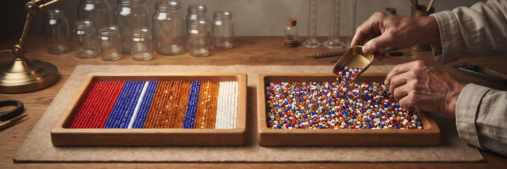
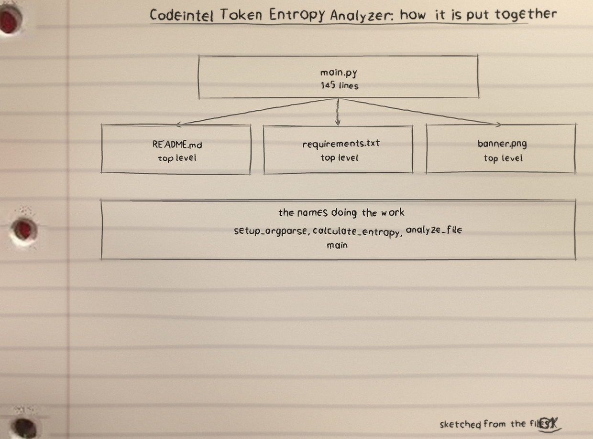
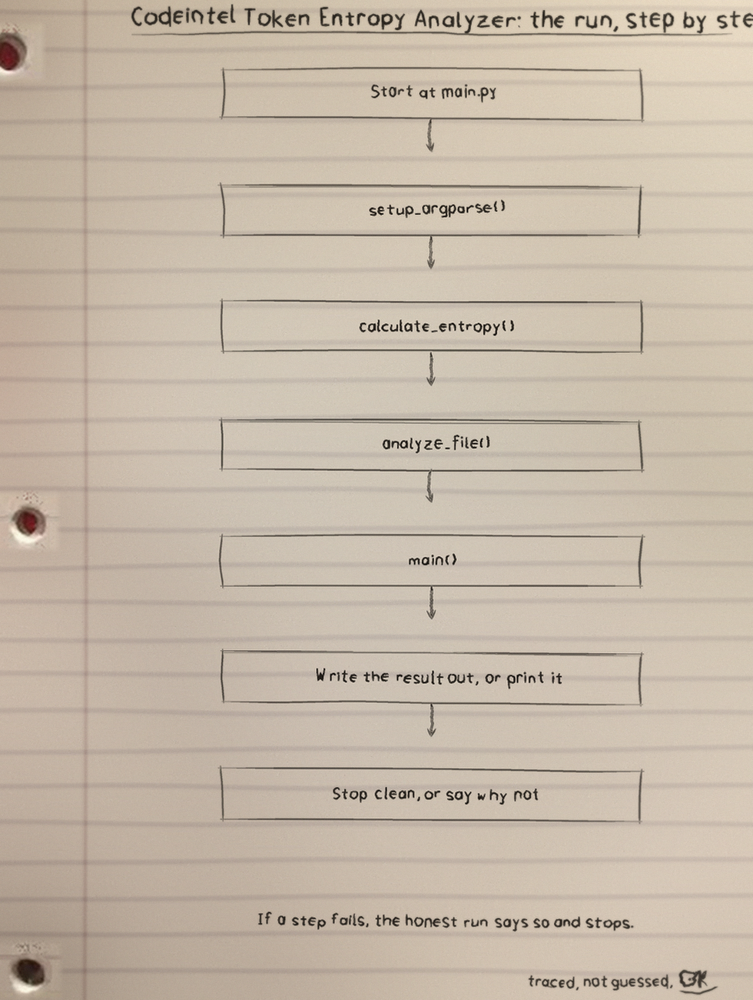
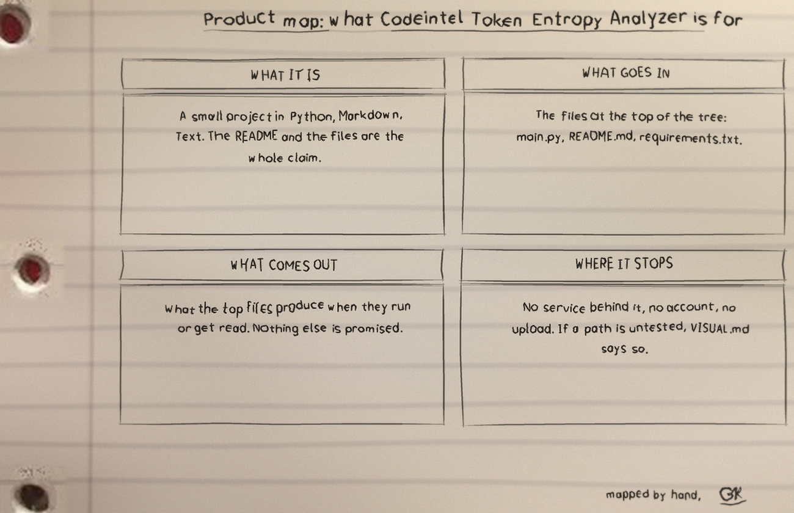

What the analyzer does
The tool finds tokens in one file and scores each one for randomness, run as python3 main.py FILEPATH [--min_length N] [--regex REGEX] [--entropy_threshold THRESHOLD]. filepath is a required positional. Tokens are whole pattern matches, taken as whole matches even when a caller's pattern carries capture groups. The default pattern is [A-Za-z0-9_-]+.
How tokens are scored
A token is considered when its length is at or above the floor (default 8) and flagged when its Shannon entropy is at or above the threshold (default 3.0). Both tests include their boundary. The tool reports a randomness score; whether a high scoring token is a secret at all is a judgement it never makes.
The log warning
A flagged token prints in full, and every unflagged token with entropy above zero is also written to the log with its value. A saved log from this tool therefore holds the very secrets it went looking for and has to be handled as one.
Parameters
filepath: path to the file to analyze. Required.--min_length: minimum length of tokens to consider (default 8).--regex: pattern that defines tokens (default [A-Za-z0-9_-]+).--entropy_threshold: entropy threshold to flag tokens (default 3.0).
Exit codes
A missing file, an unreadable file, a minimum length at or below zero, a negative threshold, or an invalid pattern each ends the run at exit 1. A completed scan exits 0, and a flagged token does not change that.
Diagrams



Licence
The repository LICENSE file carries the MIT License.